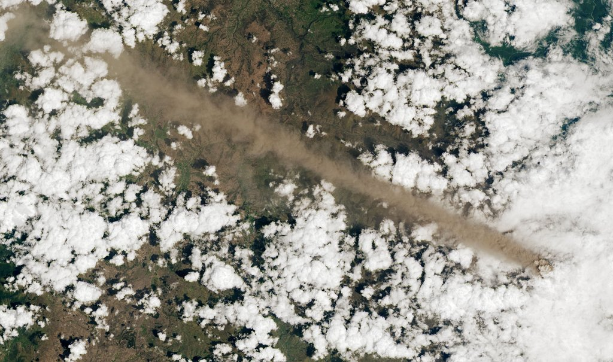
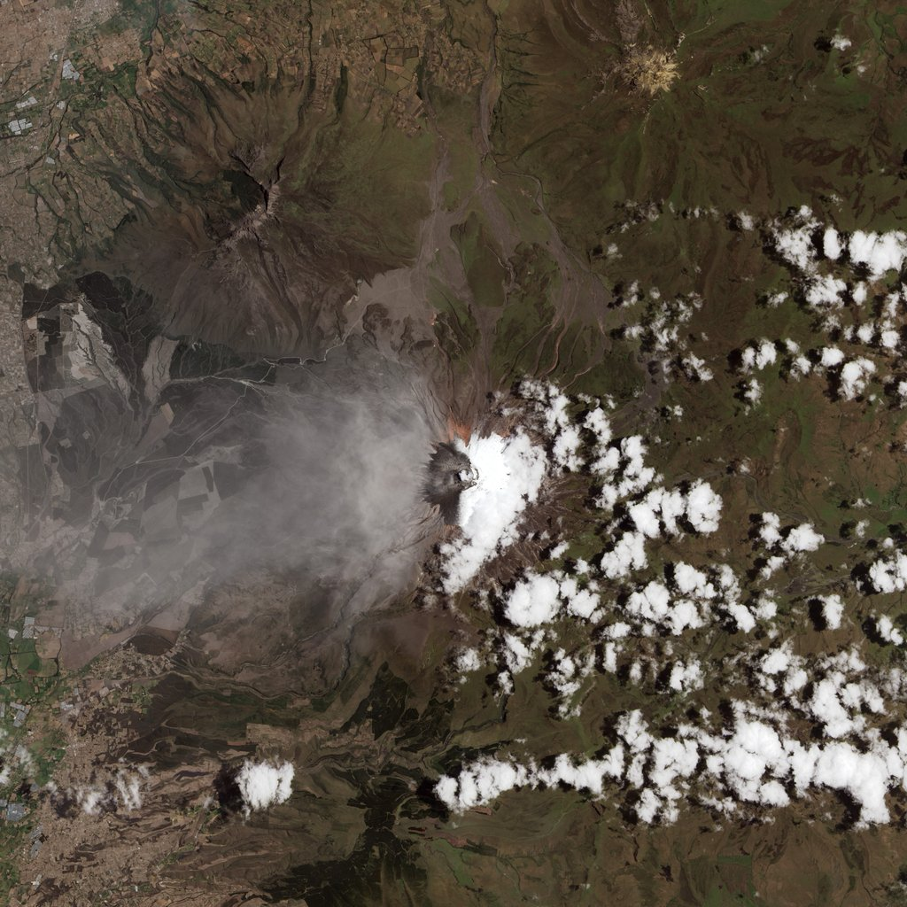

NASA Space Apps Challenge 2026 · Space Mission Design Game
Farpoint HORIZON
Construye tu nave, lánzala desde la línea ecuatorial, llévala a la Luna y mantenla hablando con la Tierra.
Equipo SK Horizon · Quito, Ecuador · Sede Sangolquí (ESPE)
Alexander Kholodov · Sebastián Amaguaya
El problema
El diseño de misiones se enseña como lista, no se vive como historia
Una misión real equilibra masa, energía, datos, delta-v, presupuesto y tiempo; en una pizarra esos compromisos no se ven.
Se aprenden las órbitas como fórmulas, nunca como una nave propia que se lanzó y se mantuvo viva.
Ecuador puso su primer satélite en órbita en 2013 (NEE-01 Pegaso, un CubeSat 1U [S-pegaso]); la siguiente generación necesita una puerta de entrada.
Ningún diseño es perfecto. El reto pide que el jugador lo sienta.

El Sangay visto por Landsat 8 (2022). Cada imagen así es el final de una cadena de decisiones difíciles. NASA Earth Observatory / USGS [S-eo]
La solución · cómo se juega
Una misión completa, de la idea a la primera señal
Elige una misión→Diseña la nave (CML 1-4)→Construye el cohete→Lanza→Vuela al destino→Opera con control de tierra→Celebra
Cada decisión mueve los indicadores compartidos y se ve en la nave. No alcanzar una meta nunca es pantalla de fracaso: toda misión que vuela logra algo, y hacer más da bonos. Cuatro estaciones para hasta cuatro jugadores (ingeniería, ciencia, piloto, control de tierra), con bots en las libres.
SCREENSHOTel diseño de la nave, una opción elegida y los indicadores moviéndose (scripts/screens/design.gd)
1 · Diseña: diez preguntas, partes reales
SCREENSHOTel constructor de cohetes con una pila y su delta-v por etapa (scripts/screens/builder.gd)
2 · Construye el cohete
SCREENSHOTel despegue junto al Cotopaxi, con la velocidad del tiempo a la vista
3 · Lanza desde el Ecuador
SCREENSHOTórbita lunar o alunizaje, la celebración
4 · Llega, opera, celebra
Datos de la NASA en el centro
Datos reales de la NASA mueven la física
JPL Horizons: dónde está la Luna el día del lanzamiento; el viaje se sincroniza para encontrarla [S-horizons].
NSSDC Fact Sheets: masa, radio y gravedad de cada cuerpo [S-nssdc-planets].
GIBS, Landsat, ASTER, LRO, SRTM: la Tierra, los volcanes del Ecuador y la Luna [S-gibs] [S-eo].
APIs de la NASA→tools/data/→data/nasa/*.json→física y texturas
Comprobado, no ajustado
Nuestro cohete tipo Electron sube 313 kg a órbita baja (real: 300 kg); la cima del Cotopaxi sale a 5.876 m (publicada: 5.897 m).
Polo sur de la Luna, mosaico de la cámara gran angular de LRO, reproyectado por nuestro script [S-lroc-wac]
Tecnología · el juego funcionando
Hecho para correr donde haya un navegador
Godot 4.7, renderizador GL Compatibility: corre en GPUs integradas y en el navegador; versión de escritorio como respaldo.
Datos aparte del código: misiones, partes, cohetes y textos viven en data/*.json, cada valor con su fuente.
Comportamiento real: gravedad de cada cuerpo, constantes reales; el tiempo corre real y el jugador lo acelera a la vista (×1, ×10, ×100).
Revisado en cada cambio: importación, una corrida sin pantalla, una prueba de estrés y la exportación web.
Juégalo
TODO: enlace del juego · repositorio: github.com/alexanderkholodov1/farpoint-horizon (MIT)
SCREENSHOTel menú o las tarjetas de misión en la versión web, con el navegador a la vista
Se juega en el navegador: TODO el enlace en vivo
Impacto · siguientes pasos
De los volcanes del Ecuador a la Luna, en español e inglés
Para estudiantes, docentes y curiosos: sin instalar nada, cada concepto explicado en palabras simples.
Local: lanzar desde el Ecuador (el giro de la Tierra regala velocidad), vigilar el Cotopaxi y el Sangay, seguir El Niño.
Misiones: TODO confirmar la lista final (volcanes, El Niño, la Luna, un telescopio espacial).
Después del hackathon
Una campaña con historia; jugar con hasta tres amigos en línea.
Pilotos en aulas del Ecuador. TODO: un aliado o primer paso.

El Cotopaxi desde Landsat 8 (2015): la misión "Ecuador Volcano Watch" lo sobrevuela [S-eo]
Transparencia · créditos · equipo
Nuestro trabajo, nuestras fuentes, nuestra ayuda
Hecho por nosotros: el juego, sus modelos 3D (de nuestros scripts), música y sonidos. Ninguna imagen hecha con IA.
Citado: TODO número de fuentes en docs/sources.md (69 hoy), en el repositorio y en los créditos. Sin logos de la NASA.
IA declarada: Claude Code para código e investigación; Cursor para una prueba web. TODO: las herramientas del compañero (README). La idea y el diseño son nuestros.
Equipo SK Horizon
Alexander Kholodov: líder; la misión y el vuelo a la Luna.
Sebastián Amaguaya: el constructor de cohetes, modelos 3D, imagen y sonido.
SCREENSHOTla película de créditos sobre la Tierra, o la lista de fuentes en el juego (scripts/screens/credits.gd)